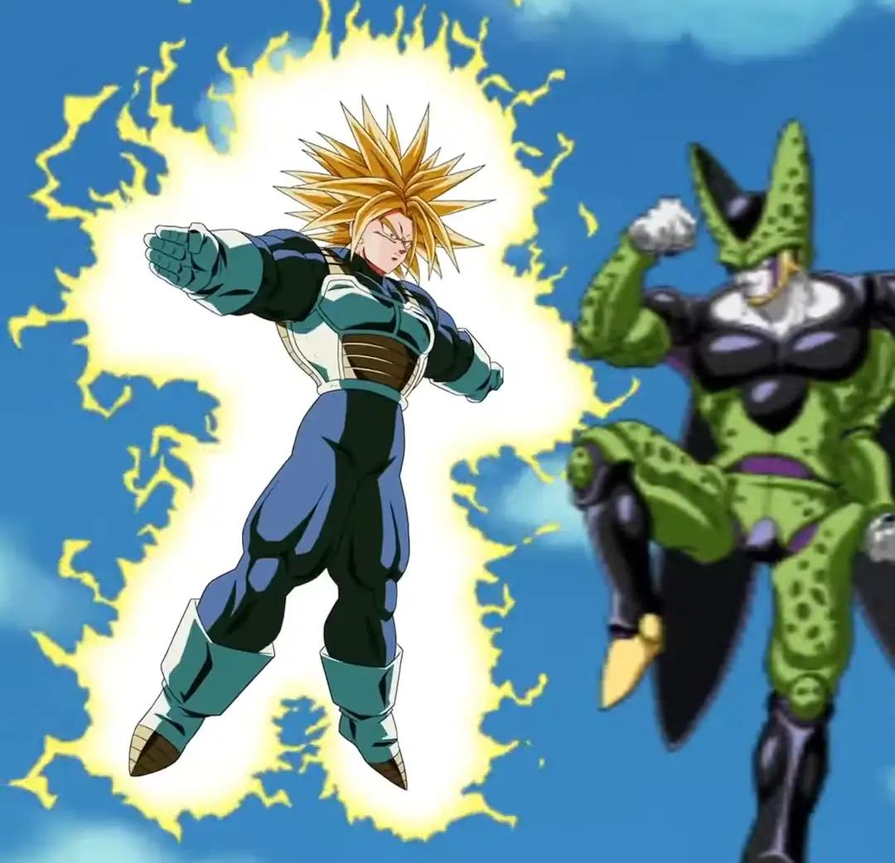

DATA DE LANÇAMENTO: 03/01/2024
E agora ele vira um card muito bom??????
Ele tem Defesa Ativa e um SA adicional por 3 turnos, e isso já é o suficiente já que quando ele se transformar a luta vai estar no final já
E então ele tem crítico garantido, 300% de ATK e DEF (balanceado), +200% dependendo do quão alta tá sua vida e +100% quando ele dá um SA, oq é insano, o salto nos stats dele é absurdo
E na sua INCRÍVEL active de 10 SEGUNDOS, ele se aproxima do inimigo, faz um T-Pose, diz 「地獄のような未来は もうたくさんだ!!」/ "Já chega de um futuro infernal!!", e estoura o inimigo, fim da active

E sim, a Active é muito boa, já q ela impede o inimigo de atacar no turno
Mas fica a pergunta: Vale mesmo a pena passar pelo sofrimento que é usar esse card só por isso?
Nota dos Links:
08/10
Nota das Categorias:
09/10

Forma Base
Super Saiyan Trunks (Teen)
Você chegou ao fim dessa página!
Obrigado por ler tudo, e fica a vontade pra ver outras